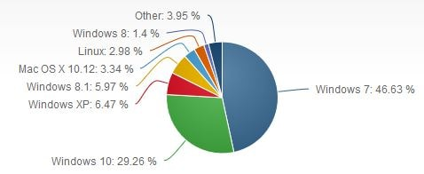

Windows
Microsoft created the Windows operating system in the mid-1980s. There have been many different versions of Windows, but the most recent ones are Windows 10 (released in 2015), Windows 8 (2012), Windows 7 (2009), and Windows Vista (2007). Windows comes pre-loaded on most new PCs, which helps to make it the most popular operating system in the world.
Microsoft Windows Operating Systems
The Windows operating system (Windows OS) for desktop PCs are more formally called Microsoft Windows and is actually a family of operating systems for personal computers. Windows dominates the personal computer world, running, by some estimates, more than 90 percent of all personal computers – the remainder running Linux and Mac operating systems. Windows provides a graphical user interface (GUI), virtual memory management, multitasking, and support for many peripheral devices. In addition to Windows operating systems for personal computers, Microsoft also offers operating systems for servers and mobile devices. The following image indicates the total market share of all desktop operating systems (November, 2017).
Windows OS Versions
- MS-DOS
- Windows 1.0 - 2.0
- Windows 3.0 – 3.1
- Windows 95
- Windows 98
- Windows ME - Millennium Edition
- Windows NT 31. - 4.0
- Windows 2000
- Windows XP
- Windows Vista
- Windows 7
- Windows 8
- Windows 10
- Windows Server
- Windows Home Server